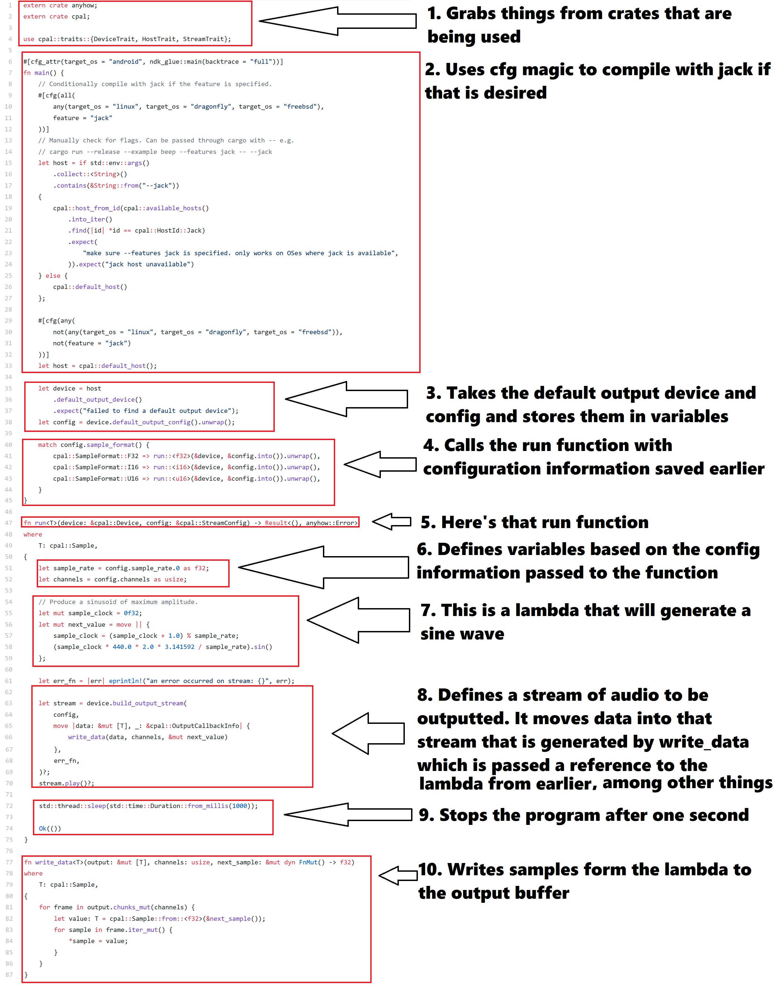

Standalone audio programming with CPAL
Understanding CPAL (enough to play some audio)
Okay so for starters here's the library I used. I'll start by breaking down the beep example and then I'll move on to how I made it my own. I'm trying to make this pretty beginner friendly, so people who are semi-fluent in Rust should skip lower down. In fact, if you're fluent in Rust, then most of what I'm doing will be VERY obvious. My view is also going to be very high-level, because the goal is generating cool audio! I don't care so much about deeply understanding the boilerplate code that allows my audio to be played. Understanding some of it is important, though.
An important note is that this only documents my experiences of trying to understand and write code from the perspective of an inexperienced Rust user. Most of what I do will work, but it should not be imitated.
- This allows access to parts of other crates that code uses.
- This makes the code compile with Jack as the audio host if the operating system is Linux, Dragonfly, or FreeBSD, or if the Jack feature is specified on the command line as it's own argument ("--jack") or as feature ("--jack".) If the target operating system ISN'T one of the three choices and the Jack feature ISN'T specified on the command line, the code compiles with the default audio host.
- This finds the default audio device from the host and stores it in a variable. Then, it finds the default output configuration from that device.
- This looks at the sample format specified in the devies output configuration and calls the run function with the appropriate sample format passed, as well as a reference to the device and a reference to the device's config.
- I just thought I would point out we're in the run function now, because sometimes when I'm skimming through code I fail to notice that.
- This takes the sample rate and number of channels from the configuration passed to run and stores them in variables.
- Here is where things get a little tricky. This is a lambda. Think of it as a function that keeps track of state. My understanding is that they're used when you have to keep track of a value but the code you write isn't complicated enough to warrant a struct. This lambda keeps track of a sample clock that increments every new sample and resets every second, and uses it to generate a sine wave.
- I don't really fully understand this, but I do know that periodically it calls write_data and passes it something that contains buffers to be filled, a number of channels, and a mutable reference to our lambda from eariler
- Okay, so run returns a Result type from the anyhow crate we saw back in line one. Since the run function is the only thing tying up the main thread, when it returns a value the main thread is done and the program stops. So this code waits a second, and then returns a result. This allows the program to stop.
- This is the function that writes data to some buffers. It fills the buffer for each channel with data from our lambda.